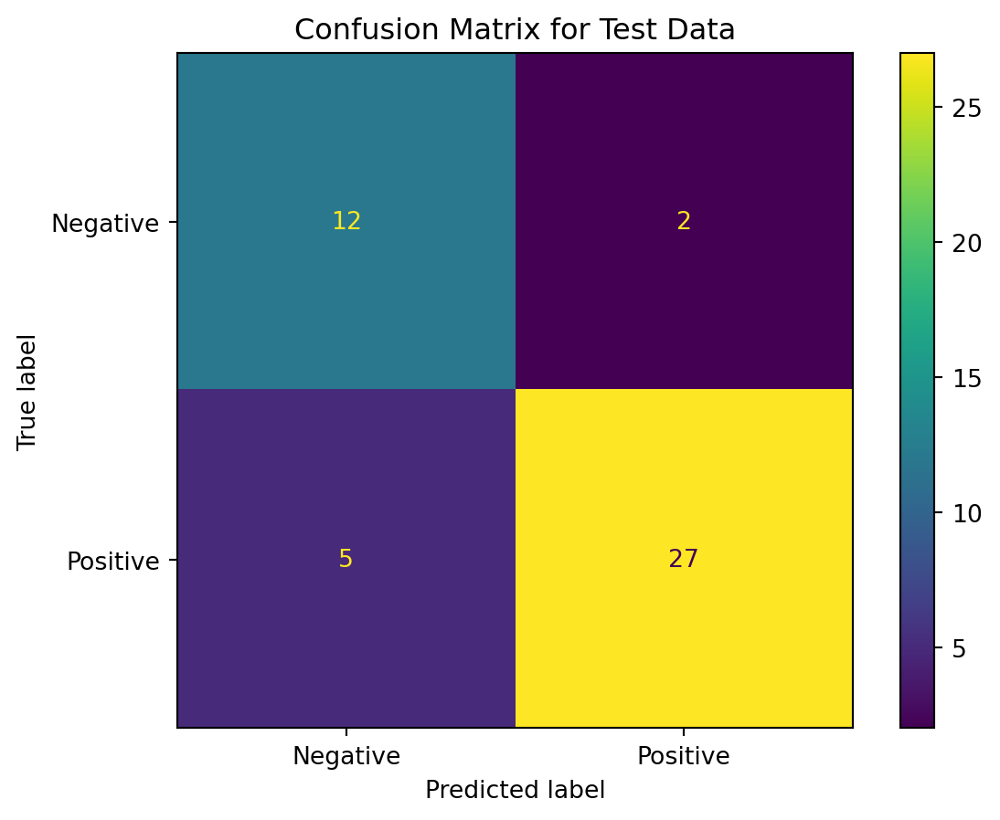

Code
import pandas as pd
import nltk
import json
import ast
import matplotlib.pyplot as plt
%matplotlib inline
import warnings
warnings.filterwarnings("ignore")
import osimport pandas as pd
import nltk
import json
import ast
import matplotlib.pyplot as plt
%matplotlib inline
import warnings
warnings.filterwarnings("ignore")
import osos.getcwd()'/Users/raunakadvani/anly-501-project-raunakadvani2410/501-project-website/pages'news_df = pd.read_csv("../../data/raw-data/Newsapi_raw.csv", index_col=[0]) # import raw dataLet’s first check if any rows have NA values
df = pd.DataFrame(news_df) # create df copy to avoid losing original data
df.isna().any() # check if any values are NAsource False
author True
title False
description True
url False
urlToImage False
publishedAt False
content False
dtype: boolimport re
news_df['source'] = [re.sub("[^:]*,[^:]*", "", x) for x in news_df['source']]
news_df['source'] = [re.sub("'id'::", "", x) for x in news_df['source']]
news_df['source'] = [re.sub("\\{|\\}", "", x) for x in news_df['source']]
news_df['source'] = [re.sub("'", "", x) for x in news_df['source']]news_df['source'].value_counts() Reuters 318
Business Insider 136
BBC News 2
Name: source, dtype: int64is_NaN = df.isnull()
row_has_NaN = is_NaN.any(axis=1)
rows_with_NaN = df[row_has_NaN]cleaned=[]
for i in news_df['content']:
if (i.find('...')!=-1) or (i.find('....')!=-1) or (i.find("..")!=-1):
new=i.replace("..."," ").replace("...."," ").replace(".."," ")
cleaned.append(new.strip())
else:
cleaned.append(i.strip())Now, we will remove punctuation from sentences, so that it’s more readable for the computer
import string
string.punctuation
def remove_punct(text):
text = "".join([char for char in text if char not in string.punctuation])
text = re.sub('[0-9]+', '', text) #removes numbers from text
return text
news_df['clean_content']=news_df['content'].apply(lambda x: remove_punct(x))def tokenization(text):
text = re.split('\W+', text) #splitting each sentence/ tweet into its individual words
return text
news_df['content_tokenized'] = news_df['clean_content'].apply(lambda x: tokenization(x.lower()))stopwords = nltk.corpus.stopwords.words('english')
def remove_stopwords(text):
text = [word for word in text if word not in stopwords]
return text
news_df['content_nonstop'] = news_df['content_tokenized'].apply(lambda x: remove_stopwords(x))wordnet = nltk.WordNetLemmatizer()
def lemmatizer(text):
text = [wordnet.lemmatize(word) for word in text]
return text
news_df['content_lemmatized'] = news_df['content_nonstop'].apply(lambda x: lemmatizer(x))from nltk.sentiment.vader import SentimentIntensityAnalyzer
lemma=[]
for i in news_df['content_lemmatized']:
s = " ".join(x for x in i)
n=s.replace("[","").replace("]","").replace(","," ").replace("'", "")
lemma.append(n)
news_df['Content_Lemmatized_Sentiment_Analysis']=lemma
analyzer = SentimentIntensityAnalyzer()
news_df['sentiment_rating'] = news_df['Content_Lemmatized_Sentiment_Analysis'].apply(analyzer.polarity_scores)
def just_compound(x):
return x['compound']
news_df['sentiment_rating'] = news_df['sentiment_rating'].apply(lambda x: just_compound(x))news_df_nb = news_df[['Content_Lemmatized_Sentiment_Analysis', 'sentiment_rating']]news_df_nb['label'] = news_df_nb['sentiment_rating'].apply(lambda x: "Negative" if x <0 else "Positive")from sklearn.model_selection import train_test_split
X_train, X_test, y_train, y_test = train_test_split(
news_df_nb['Content_Lemmatized_Sentiment_Analysis'],
news_df_nb['label'],
random_state = 1,test_size=0.1
)
print("Training dataset: ", X_train.shape[0])
print("Test dataset: ", X_test.shape[0])Training dataset: 410
Test dataset: 46from sklearn.feature_extraction.text import CountVectorizer
count_vector = CountVectorizer(stop_words = 'english')
training_data = count_vector.fit_transform(X_train)
testing_data = count_vector.transform(X_test)from sklearn.naive_bayes import MultinomialNB
naive_bayes = MultinomialNB()
naive_bayes.fit(training_data, y_train)MultinomialNB()In a Jupyter environment, please rerun this cell to show the HTML representation or trust the notebook.
MultinomialNB()
predictions = naive_bayes.predict(testing_data)from sklearn.metrics import accuracy_score, recall_score, precision_score, f1_score
print("Accuracy score: ", accuracy_score(y_test, predictions))
print("Recall score: ", recall_score(y_test, predictions, average = 'weighted'))
print("Precision score: ", precision_score(y_test, predictions, average = 'weighted'))
print("F1 score: ", f1_score(y_test, predictions, average = 'weighted'))Accuracy score: 0.8478260869565217
Recall score: 0.8478260869565217
Precision score: 0.8625099215098334
F1 score: 0.851447359345182from sklearn.metrics import ConfusionMatrixDisplay
ConfusionMatrixDisplay.from_predictions(y_test,predictions)
plt.title("Confusion Matrix for Test Data")
plt.grid(False)
plt.show()
all_clean_words=[]
for i in news_df['Content_Lemmatized_Sentiment_Analysis']:
for j in i:
all_clean_words.append(i)
all_clean_words=list(set(all_clean_words))
clean_words_str=' '.join(all_clean_words)from wordcloud import WordCloud
wordcloud = WordCloud(width = 800, height = 800,
background_color ='white',
stopwords = stopwords,
min_font_size = 10).generate(clean_words_str)
# plot the WordCloud image
plt.figure(figsize = (8, 8), facecolor = None)
plt.imshow(wordcloud)
plt.axis("off")
plt.tight_layout(pad = 0)
plt.show()Overall, my sentiment analysis and Naive Bayes were both strong. My sentiment analysis was able to correctly fit positive and negative words using Multinomaial Naive Bayes. My accuracy score of 84.7% and precision score of 86.3% respectively were both impressive for me. Furthermore, my WordCloud was useful to see what keywords played a large role in news stories revolving around the US’ impending recession. Thre wordcloud created a visualization which accurately depicted sentiment around the economic environment, and this was supported by the Vader Sentiment Analysis.